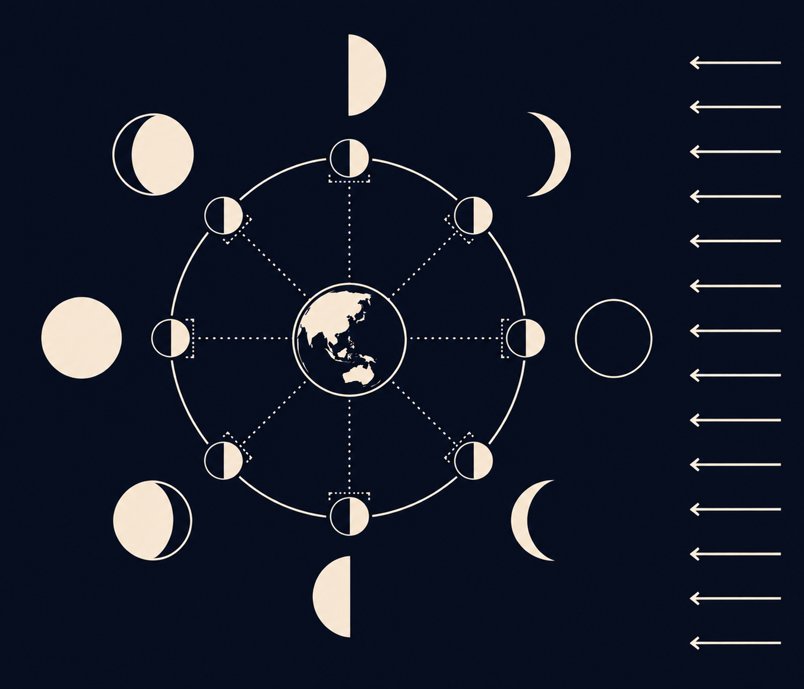
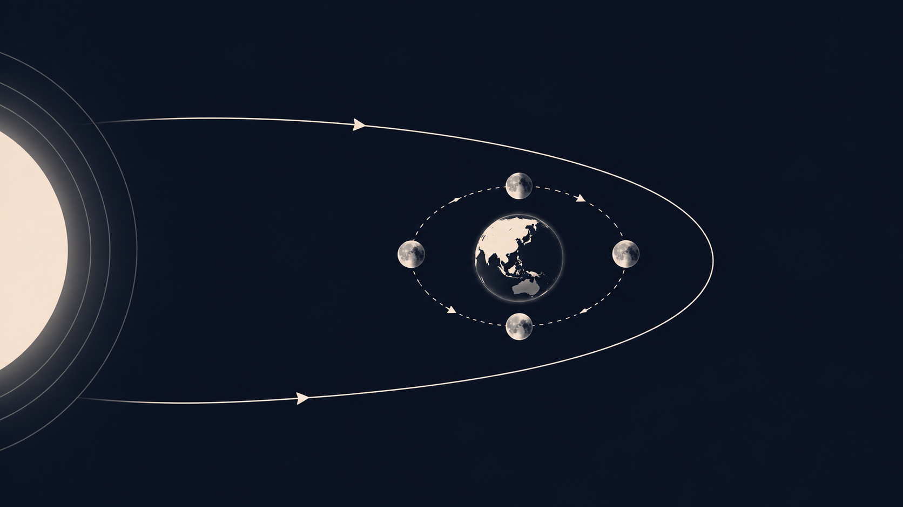
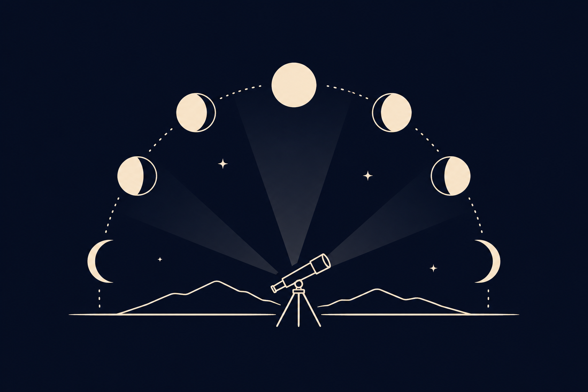

How Moon Phases Occur
月球本身並不發光，而是透過反射太陽光呈現不同的明暗變化。隨著月球繞行地球，太陽、地球與月球之間的相對位置不斷改變，使我們看見不同形狀的月亮，形成新月、弦月、滿月等月相變化。

The Lunar Orbit
月球沿著軌道繞行地球，並隨著地球一同繞行太陽。從新月到下一次新月，完整的月相週期約為29.5天。月亮在盈虧之間循環變化，形成規律而持續的天體運行節奏。

When to Observe the Moon
不同月相有著不同的升起與落下時間。上弦月適合在傍晚觀察，滿月通常整夜可見，而下弦月則適合在清晨觀測。選擇天氣晴朗、視野開闊且光害較少的地點，更能清楚欣賞月亮的形態與變化。